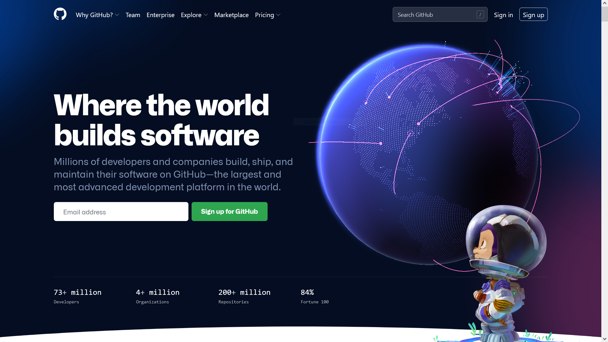
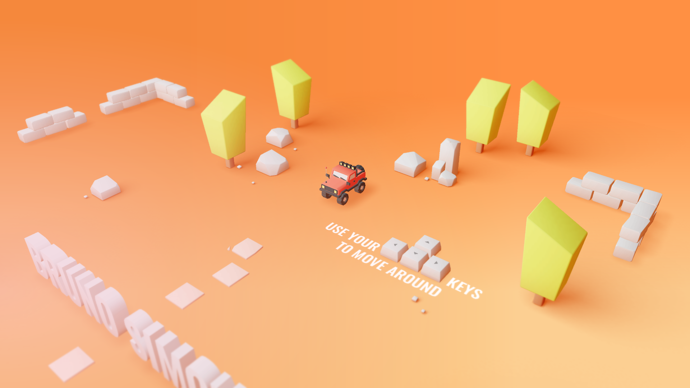
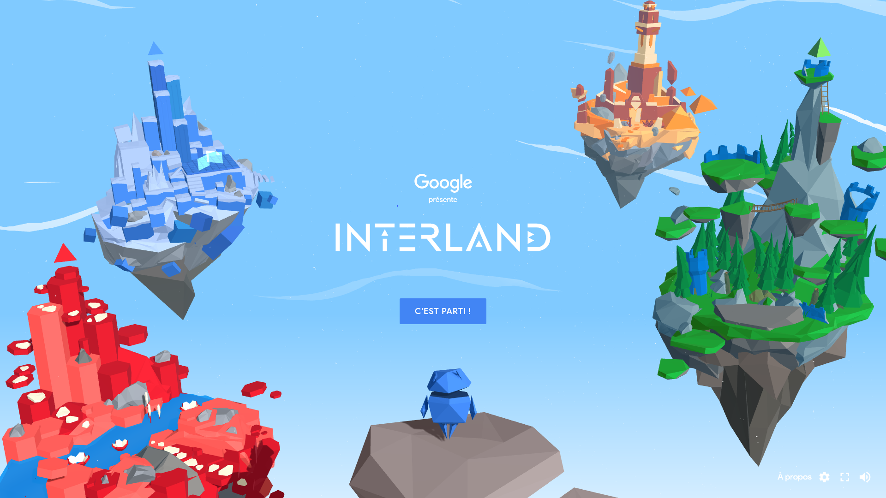
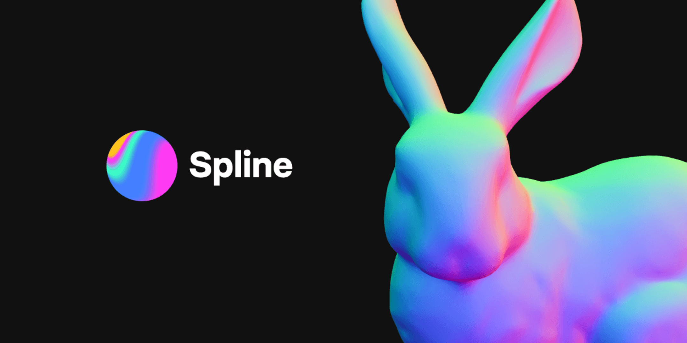

Note du créateur
Ce site web a été réalisé par Lucas Poujardieu de DAWIN B.
C'est un projet de veille Technologique pour l'IUT informatique de Gradignan.
Il n'est utilisé que pour un usage pédagogique.
Enjoy 😎!
C'est quoi ThreeJS ?
ThreeJS est une bibliothèque opensource JavaScript qui permet de créer des scènes en 3D dans une page web.
Elle permet de faire des rendus d'objets WebGL dans une balise Canva HTML5 sans avoir besoin d'installer des plugins supplémentaires.
En effet, elle prend en charge des choses telles que les scènes, lumières, ombres, matériaux, textures, mathématiques 3D, en bref, tout ce que vous avez à écrire par vous même si vous aviez à utiliser WebGL directement.
Elle a été créé par un certain MrDoob et reste maintenue sur son projet GitHub.
L'objectif de cette librairie est de simplifier au maximum l'inclusion de contenu 3D dans une page web.
https://twitter.com/mrdoob https://threejs.org/ https://github.com/mrdoob/three.js/Voici quelques exemples d'utilisation de ThreeJS

GitHub
Sur la première page du site, on retrouve un globe terrestre totalement réalisé avec la librairie.

Bruno Simon
Il reste une référence dans le monde de ThreeJS car il a réalisé son propre site portfolio directement avec la bibliothèque.
On peut se déplacer directement grâce à une petite voiture dans un décor en 3D. Son site avait créé un engouement tellement immense qui a même lancé une formation complète sur la bibliothèque.
À l'heure d'aujourd'hui elle reste le meilleur moyen de se former dessus. De plus il est français!
son portfolio : https://bruno-simon.com/
sa formation : https://threejs-journey.com/

Interland
C'est un jeu sur le thème des comportements sur internet créé par Google.
Il a été totalement réalisé avec la librairie et c'est un très bon exemple d'optimisation de WebGL en général.

Spline
C'est un outil gratuit pour créer des objets 3Ds à l'image d'un autre logiciel concurrent comme Blender. Il est actuellement en alpha mais n'a rien à envier à ses concurrents. Il propose une application Web qui utilise le ThreeJS.
Tutoriel "Hello Cube"
Je vais maintenant vous faire une petite initiation à ThreeJS grâce à ce tutoriel inspiré de l'article "ThreeJs Fondamentals" présent sur le site de la librairie ( source ).
Nous allons réaliser dans ce tutoriel un cube qui effectue une rotation.
Pré-requis
plus de détail sur https://threejs.org/manual/#fr/prerequisites
- vous savez programmer en Javascript
- vous savez ce que c'est qu'un DOM, comment écrire du HTML, ainsi que créer des éléments DOM en Javascript
- vous avez des connaissances en CSS et savez ce que sont les sélecteurs CSS
- vous connaissez ES5, ES6, voire ES7
- vous savez que le navigateur n'exécute que du Javascript de façon événementiel via des fonctions de rappel (callbacks)
- vous savez ce qu'est une fonction de clôture (closure).
Pour que ce tutoriel se passe bien, je vous mets à disposition cet éditeur en ligne qui permet d'auto-interpréter le code et de ne pas avoir de problème de configuration.
See the Pen Initiation threeJS by lucas (@creepsjay) on CodePen.
Maintenant commençons !
Premièrement regardons le code de base :
On remarque dans le code HTML une balise canvas.
Elle est très importante car c'est grâce à elle que nous allons pouvoir afficher notre modèle 3D.
Dans le code JavaScript, on remarque l'importation de ThreeJS directement depuis le site internet, on peut aussi créer un projet ThreeJS via NodeJS par exemple.
De plus on a une fonction main() qui sélectione notre canvas (c'est dans cette fonction que nous coderons notre cube).
Premièrement, vous aller créer un moteur de rendu pour notre modèle :
const renderer = new THREE.WebGLRenderer({canvas});
Dans notre cas, le WebGLRenderer permet de charger les données fournies pour effectuer le rendu dans le canvas.
Maintenant nous avons besoin d'une Camera.
La caméra sera nos yeux elle représente notre champ de vision et notre placement par rapport à l'objet 3D
- const fov = 75;
- const aspect = 2; // valeur par défaut du canevas
- const near = 0.1;
- const far = 5;
- const camera = new THREE.PerspectiveCamera(fov, aspect, near, far);
- camera.position.z = 2;
D'après la documentation :
fov est le raccourci pour field of view ou champ de vision. Dans ce cas, 75 degrés d'ouverture verticale. Il est à noter que la plupart des angles dans Three.js sont exprimés en radians à l'exception de la caméra perspective.
aspect est l'aspect de l'affichage dans le canevas.
near et far délimitent la portion de l'espace devant la caméra dont le rendu est effectué. Tout ce qui est avant ou après est découpé (clipped), donc non dessiné.
Ensuite, nous avons besoin d'une Scene
La Scene est la racine du graph de notre modèle 3D et tout ce que ThreeJS dessine doit être ajouté à cette Scene.
- const scene = new THREE.Scene();
Passons aux choses sérieuses et créons notre cube !
Premièrement, un objet 3D est composé d'une géométrie. ThreeJS propose plein de géométrie, donc nous allons utiliser une BoxGeometry. Elle contient les paramètres d'un parallélépipède.
Pour approfondir, une géométrie définit les sommets qui composent un objet 3D.
- const boxWidth = 1;
- const boxHeight = 1;
- const boxDepth = 1;
- const geometry = new THREE.BoxGeometry(boxWidth, boxHeight, boxDepth);
Deuxièmement, créons un matériau. Il définit la texture de notre modèle.
La couleur doit être spécifié au format hexadécimal(0xffffff par exemple).
- const material = new THREE.MeshBasicMaterial({color: 0x44aa88});
Dernière étape, la combinaison de la BoxGeometry et du MeshBasicMaterial.
En effet créons un maillage ou Mesh, ajoutons le à la Scene et effectuons le rendu.
- const cube = new THREE.Mesh(geometry, material);
- scene.add(cube);
- renderer.render(scene, camera);
Voici ce que vous devez obtenir :
Malheureusement on ne peut pas encore distinguer un cube d'un carré. Il va falloir ajouter une rotation.
Pour l'animation, nous nous effectuerons son rendu dans une boucle de rendu en utilisant requestAnimationFrame.
- function render(time) {
- time *= 0.001; // convertis le temps en secondes
-
- cube.rotation.x = time;
- cube.rotation.y = time;
-
- renderer.render(scene, camera);
-
- requestAnimationFrame(render);
- }
- requestAnimationFrame(render);
D'après la documentation :
requestAnimationFrame est une requête auprès du navigateur dans le cas où vous voulez animer quelque chose. Nous lui passons une fonction à appeler. Dans notre cas, c'est la fonction render. Le navigateur appellera cette fonction et, si nous mettons à jour l'affichage de la page, le navigateur refera le rendu de la page. Dans notre cas, nous appelons la fonction renderer.render de Three.js qui dessinera notre scène.
requestAnimationFrame passe à notre fonction le temps depuis lequel la page est chargée. Il est mesuré en millisecondes. Il est parfois plus facile de travailler avec des secondes. C'est pourquoi, nous l'avons converti.
Et voici le résultat:
Dernière étape, il faut ajouter de la lumière pour mieux voir la 3D. Créons une lumière directionelle.
- {
- const color = 0xFFFFFF;
- const intensity = 1;
- const light = new THREE.DirectionalLight(color, intensity);
- light.position.set(-1, 2, 4);
- scene.add(light);
- }
Il faut aussi changer notre type de matériau pour qu'il s'applique aux lumières. Passons d'un MeshBasicMaterial à un MeshPhongMaterial
- const material = new THREE.MeshBasicMaterial({color: 0x44aa88}); // cyan
- const material = new THREE.MeshPhongMaterial({color: 0x44aa88}); // cyan
Et voici le résultat:
Et voilà, vous avez réusi à créer votre premier modèle 3D! 🎉
N'hésitez pas à consulter les liens suivants pour un approfondissement ou bien pour aller voir quelques exemples de réalisation.